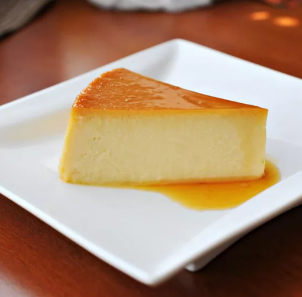

Spanish Flan

"Flan" can refer to a couple different things depending on where you live.
In this case, it's a baked custard dessert topped with caramel.
The Spanish dessert is similar to the French crème caramel.
Flan Ingredients
These are the five ingredients you'll need to make this top-rated flan recipe:
- 1 cup of white sugar: A cup of white sugar is melted on the stove until it's liquified and golden.
- 3 large eggs: You'll need three whole eggs.
- 1 can (14 ounce) of sweetened condensed milk: Because all the most delicious recipes call for a can of sweetened condensed milk.
- 1 (12 fluid ounce) of evaporated milk: This gives the flan a richer flavor than regular milk.
- 1 tablespoon of vanilla extract:It will enhance the overall flavor of the Spanish flan.
Directions
- Preheat the oven to 350 degrees F (175 degrees C).
- Melt sugar in a medium saucepan over medium-low heat until liquefied and golden in color. Carefully pour hot syrup into a 9-inch round glass baking dish, turning the dish to evenly coat the bottom and sides; set aside.
- Beat eggs in a large bowl. Add condensed milk, evaporated milk, and vanilla; beat until smooth. Pour egg mixture into the baking dish; cover with aluminum foil.
- Bake in preheated oven for 1 hour. Let cool completely.
- To serve, carefully invert onto a rimmed serving plate; let caramel sauce flow over flan.